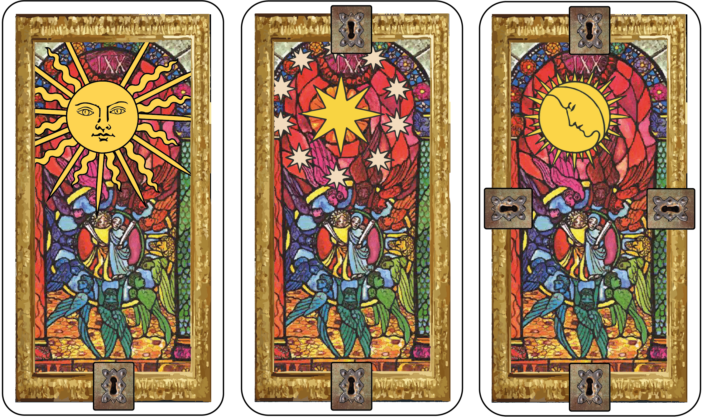

Pitch
Dans La Geste Cupide, chaque joueur incarne un aventurier en quête de fortune qui rassemble une équipe pour partir à la conquête d’un donjon. Les aventuriers doivent s’entraider pour vaincre les maitres du donjon et leurs engeances mais peuvent se mettre des bâtons dans les roues pour au final remporter le plus d'or.
